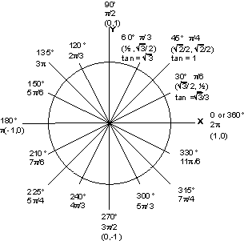
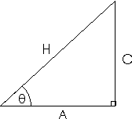

|
|
|||||||||||||||||||
|

|
|
||||||||||||||||||
|
|
|||||||||||||||||||
|  |
|
| sin2\theta + cos2\theta = 1 |
tan2\theta + 1 = sec2\theta |
|
| sin\theta/cos\theta = tan\theta |
cot2\theta + 1 = csc2\theta |
|
| sec\theta = 1/cos\theta |
cos(-\theta) = cos\theta |
|
| csc\theta = 1/sin\theta |
sin(-\theta) = -sin\theta |
|
| cot\theta = 1/tan\theta |
tan(-\theta) = -tan\theta |
|
| sin(π/2-\theta)=cos\theta |
cos(π/2-\theta)=sin\theta |
|
| sin(90°-\theta)=cos\theta |
cos(90°-\theta)=sin\theta |
|
| sin(\theta+2πk)=sin\theta |
cos(\theta+2πk)=cos\theta |
where k is an integer |
| sin2\theta = 2sinθcosθ | sin2\theta = (1-cos2θ)/2 |
| cos2\theta = cos2θ-sin2θ | cos2\theta=2cos2θ-1 |
| cos2\theta=1-2sin2θ | cos2\theta=(1+cos2θ)/2 |
| tan2\theta=(2tanθ)/(1-tan2θ) | cos(s/2)=+or-[(1+cos(s))/2]1/2 |
| tan(s/2)=sin(s)/(1+cos(s)) | sin(s/2)=+or-[(1-cos(s))/2]1/2 |
| sin(s+t)=sin(s)cos(t)+cos(s)sin(t) | sin(s-t)=sin(s)cos(t)-cos(s)sin(t) |
| cos(s+t)=cos(s)cos(t)-sin(s)sin(t) | cos(s-t)=cos(s)cos(t)+sin(s)sin(t) |
| tan(s+t)=(tan(s)+tan(t))/(1-tan(s)tan(t)) | tan(s-t)=(tan(s)-tan(t))/(1+tan(s)tan(t)) |
| sin \alpha+sinβ=2sin((\alpha+β)/2)cos((\alpha-β)/2) | sin \alpha-sinβ= 2cos((\alpha+β)/2)sin((\alpha-β)/2) |
| cos \alpha+cosβ=2cos((\alpha+β)/2)cos((\alpha-β)/2) | cos \alpha-cosβ=-2sin((\alpha+β)/2)sin((\alpha-β)/2) |
| sin \alphasinβ=(1/2)[cos(\alpha-β)-cos(\alpha+β)] | sin \alphacosβ=(1/2)[sin(\alpha+β)+sin(\alpha+β)] | cos \alphacosβ=(1/2)[-2sin(\alpha+β+cos(\alpha-β)] |
| [r(cos \theta+sin \theta;)]^n=r^n(cos n \theta;+sin n \theta;) |